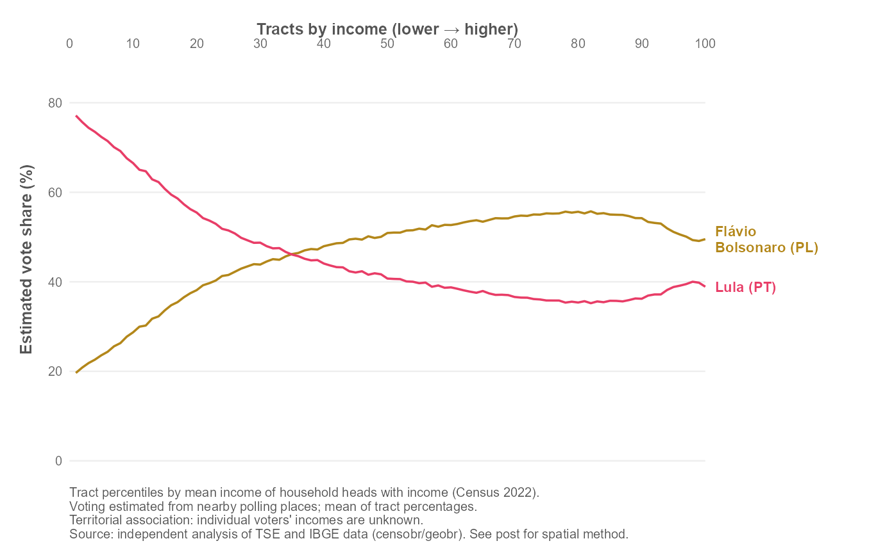
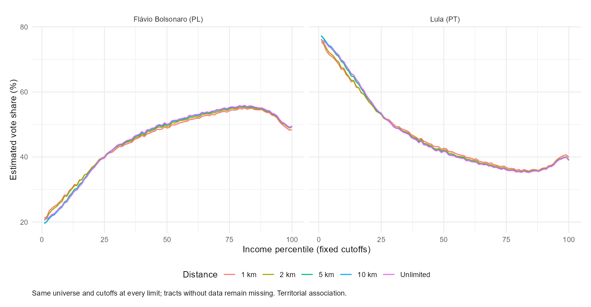
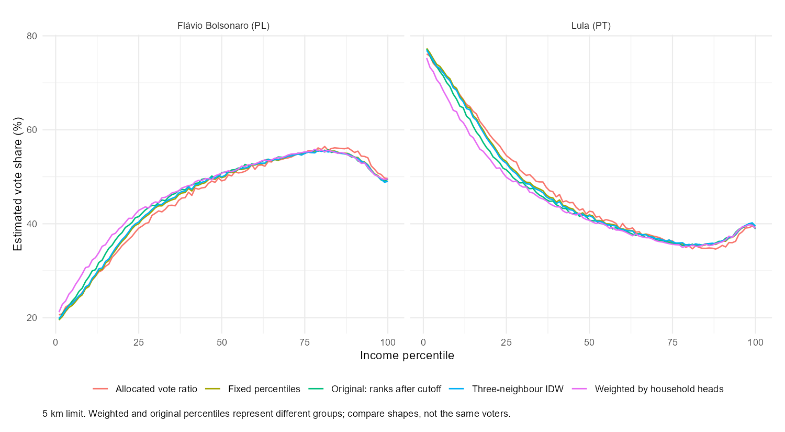
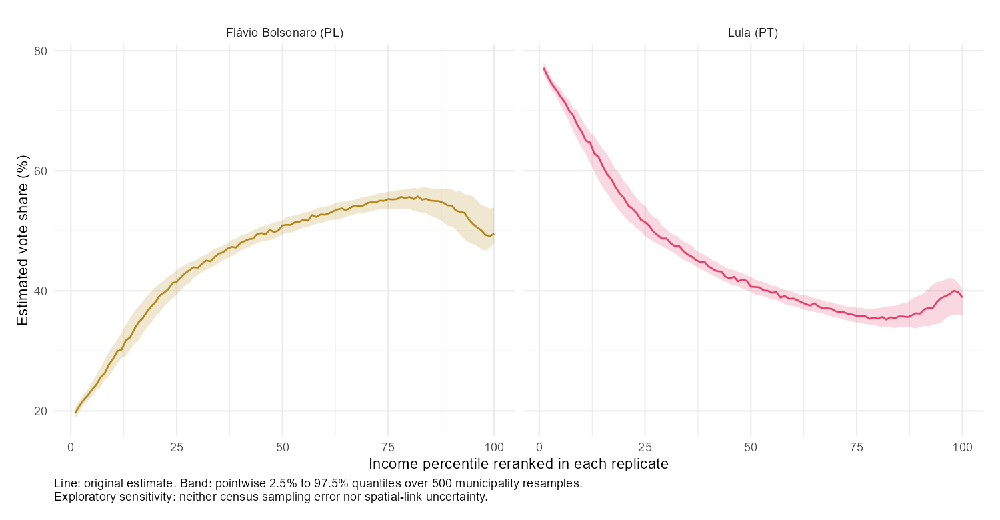

Presidential vote by census tract income percentile
Income belongs to census tracts; observed votes belong to polling places. The chart associates mean tract income with voting at nearby polling places. A higher vote share in higher-income tracts does not establish that higher-income individuals voted for that candidate. Individual voters’ incomes and the polling places used by each tract’s residents are unknown. Spatial proximity is an approximation and does not identify a tract’s electorate.

Overview
This post reconstructs the income–vote chart published by Daniel Mariani, Paula Soprana and Nicholas Pretto in Folha de S.Paulo on October 12, 2026.
Approximate reproduction. National processing and numerical checks were completed with public data. The spatial assignment is an independent implementation because the article does not specify all proximity parameters. The resulting curves differ from the reference image, and the maximum-distance choice has a material effect.
Results and coverage
The main 5 km estimate includes 410,010 tracts out of the 458,772 in the income table (89.37%). Exclusions comprise 9,241 without eligible income, 39,483 beyond the distance limit and 38 without an available spatial match. Each percentile contains 4,100 or 4,101 tracts.
At percentile 46, Lula receives 42.35%, with mean tract income of 1.68 minimum wages; the supplied reference image shows 41.12% and 1.69. The vote share difference is 1.23 percentage points. At percentile 100, estimates are 38.90% for Lula and 49.53% for Flávio, with income of 16.52 minimum wages. Flávio first exceeds Lula at percentile 35 under this implementation. These percentiles rank tracts and do not identify fractions of the population voting for either candidate.
| Maximum distance | Included tracts |
|---|---|
| 1 km | 326,951 |
| 2 km | 368,147 |
| 5 km (main figure) | 410,010 |
Comparing equally numbered percentiles under 1 and 5 km gives maximum differences of 6.32 percentage points for Lula and 5.51 for Flávio. Each distance recalculates its sample and percentile ranking, so these differences combine coverage and composition. Excluding tracts far from polling places requires care, particularly when interpreting rural areas. The association is territorial and descriptive.
The audit found 6,588 polling-place discrepancies across 497,897 sections between results and the current voter register. Calculations use the place recorded in results. Of 91,087 locations with votes and usable coordinates, 818 were incompatible with the 2022 municipal boundaries and excluded; 90,269 places remained eligible for spatial assignment.
The 100 calculated percentiles, sensitivity estimates and coverage and provenance records accompany the post.
Audit diagnostics
Used polling places represent 108,710,471 of 118,969,906 votes in the national denominator (91.38%), across 81,076 places. Within that subset, Lula has 44.84% and Flávio Bolsonaro 47.29%, differences of -0.32 and 0.25 percentage points from national shares of 45.16% and 47.04%.
The main figure retains the simple mean across tracts and percentile ranks recomputed in the included sample. The tables below preserve ranks defined before distance exclusions; these are distinct exercises.
Exclusions at 5.0 km. National income deciles of all income-eligible tracts, including those without a geographic link:
| Decile | Eligible | Beyond limit | Share | No place/boundary |
|---|---|---|---|---|
| 1 | 44,954 | 10,827 | 24.08% | 5 |
| 2 | 44,953 | 6,546 | 14.56% | 6 |
| 3 | 44,953 | 3,934 | 8.75% | 3 |
| 4 | 44,953 | 3,370 | 7.50% | 7 |
| 5 | 44,953 | 3,253 | 7.24% | 6 |
| 6 | 44,953 | 3,289 | 7.32% | 6 |
| 7 | 44,953 | 3,055 | 6.80% | 2 |
| 8 | 44,953 | 2,707 | 6.02% | 1 |
| 9 | 44,953 | 1,852 | 4.12% | 2 |
| 10 | 44,953 | 650 | 1.45% | 0 |
| Situation | Eligible | Beyond limit | Share | No place/boundary |
|---|---|---|---|---|
| Rural | 102,167 | 37,299 | 36.51% | 19 |
| Urban | 347,364 | 2,184 | 0.63% | 19 |
Crossings under fixed ranks. The first crossing may differ from a crossing sustained through the end of the distribution:
| Limit | First percentile | First sustained percentile |
|---|---|---|
| 1 km | 40 | 40 |
| 2 km | 38 | 38 |
| 5 km | 37 | 37 |
| 10 km | 37 | 37 |
| Unlimited | 37 | 37 |
Maximum method differences, at the main distance limit, comparing the same percentile index under each definition:
| Reference | Comparison | Candidate | Maximum (pp) | Compared percentiles |
|---|---|---|---|---|
| Original reranked | Fixed ranks | Lula | 2.90 | 100 |
| Original reranked | Fixed ranks | Flávio Bolsonaro | 2.59 | 100 |
| Original reranked | V06001 weighted | Lula | 3.48 | 100 |
| Original reranked | V06001 weighted | Flávio Bolsonaro | 3.04 | 100 |
| Original reranked | Ratio of sums | Lula | 3.90 | 100 |
| Original reranked | Ratio of sums | Flávio Bolsonaro | 3.37 | 100 |
| Original reranked | IDW k3 | Lula | 2.52 | 100 |
| Original reranked | IDW k3 | Flávio Bolsonaro | 2.25 | 100 |
| Fixed ranks | IDW k3 | Lula | 0.51 | 100 |
| Fixed ranks | IDW k3 | Flávio Bolsonaro | 0.45 | 100 |
V06001 weights household heads, not voters. The ratio-of-sums method preserves the votes of used polling places and allocates them across linked tracts in proportion to V06001; this approximation does not identify voters’ residences. IDW k3 also measures proximity rather than actual electoral registration.
In the exploratory bootstrap of 500 municipality resamples, 500 replicates had an observed crossing. The 2.5%, 50% and 97.5% quantiles of the first crossing percentile were 33.0, 36.0 and 39.0. Percentile bands are pointwise, not simultaneous; they measure neither census sampling error nor uncertainty in the spatial linkage.
The independent geometric audit passed 2,000 of 2,000 sampled tracts and 2,000 k3 checks. EPSG:5880 projection disagreement remained a diagnostic in 502 cases and did not replace the geodesic reference.
818 polling places with coordinates outside their municipality in the 2022 boundary layer were excluded, containing 269,462 votes in the national denominator (0.23%). Income and boundaries from 2022 do not capture every change through the 2026 election.
V06004 covers household heads with income. ResponsavelRenda does not provide the count of this group, so the share of heads without income is unavailable. V06002 counts residents and cannot recover that share.
Approximate visual Folha reference. Mean absolute error over readable points is:
| Candidate | Readable points | MAE (pp) |
|---|---|---|
| Flávio Bolsonaro (PL) | 6 | 0.82 |
| Lula (PT) | 7 | 1.19 |
The reference points come from manual visual readings and the image tooltip, including rounding and obscured regions. This MAE neither validates the complete curve nor establishes equivalence to Folha’s method.
The spatial validation note documents national projection distortion and the independent spherical reference used to verify links. Municipal incompatibilities may reflect geocoding, registration or boundary changes; the test does not identify the cause of each discrepancy.
Methodology
censobr::read_tracts(year = 2022, dataset = "ResponsavelRenda") provides tract income. V06004 measures mean nominal monthly income of household heads with income in occupied permanent private households; V06001 counts household heads, including those without income. It does not count heads with income. The available table does not provide that latter count, so the share without income cannot be derived from these variables. This is neither per capita household income nor mean income of all residents. Tracts without household heads or with missing, suppressed or nonpositive mean income are excluded. Income is divided by BRL 1,212 to express it in July 2022 minimum wages, the Census reference period. Definitions follow the official IBGE dictionary. Income describes tracts in 2022, not their residents’ incomes in 2026. Changes in residence, composition and income between the two years remain outside this linkage.
The pipeline downloads 2026 presidential votes by electoral section from the TSE results dataset through its public CKAN API. It selects the first round and presidency. Valid votes for all candidates form the denominator; blank and invalid votes are excluded. The two displayed candidates therefore need not sum to 100%. Validity is checked against the official candidate and vote-detail tables for each municipality and electoral zone. A candidate number in the raw section file does not establish validity. Each candidate group must be entirely valid or entirely excluded; partial validity stops the calculation because it cannot be allocated to sections. Unmatched records must reconcile exactly with the official technical null votes, and valid totals must agree in every zone. electionsBR::vote_section() is a related R option, but the consulted source documents years through 2024; the pipeline uses the official 2026 download directly.
Electoral sections and census tracts have different boundaries and codes. The results file itself links sections to polling places. The 2026 polling-place register provides an independent audit: when the two disagree, the results’ place code takes precedence, preserving the location recorded in the count rather than overwriting it with the current register. Coordinates come from geobr::read_polling_places(year = 2026), which combines TSE coordinates and geocodebr geocoding. Repeated records with identical coordinates are collapsed; conflicting locations are excluded. Points must lie within their municipalities’ 2022 boundaries from geobr. The independent spatial estimator assigns each tract the vote shares of the nearest valid polling place to an interior point, within the same municipality and a configurable maximum distance. Votes are summed across sections at each polling place before computing shares. These are neighbourhood estimates, not observed votes of tract residents. This differs from the original article’s unspecified proximity and geocoding details.
Registered electoral addresses may be outdated or differ from actual residence. Even a correctly located polling place does not reveal where its voters live. Alternative weights and interpolation do not resolve this limitation, and increasing coverage does not remove it.
Eligible tracts are ranked by income, with tract code breaking ties, then divided into 100 groups as equal in tract count as possible. Group vote shares are unweighted means of tract percentages. These are tract percentiles, not percentiles of people, voters or households. Exclusions are recorded; maximum-distance sensitivity is examined explicitly. Reported centile income is the unweighted mean of tract mean incomes, in minimum wages. Distance ties between polling places are broken by the ordered composite state, municipality, electoral zone and place code.
Sensitivity and limitations
What changes in the sensitivity analyses
The main curve preserves the simple mean of the shares assigned to tracts, with percentiles reranked after the distance cutoff. A polling place may represent several tracts, so this mean is not the national vote share. The fixed-cutoff comparison ranks income-eligible tracts with any spatial link once, including links beyond 5 km, then applies 1, 2, 5 and 10 km limits and no limit. Counts show how many tracts remain observed in each group.
The household-head weighted alternative defines groups using cumulative V06001 before each tract in the income ranking. Tracts are never split, so groups need not contain exactly 1% of heads. Income and vote shares are weighted means using that count, which includes heads without income. These weights do not count voters. They also do not recover an aggregate individual mean income: the number of heads with income in each tract is unknown.
The allocated vote ratio distributes each polling place’s votes once among its eligible linked tracts in proportion to V06001, then divides allocated candidate votes by allocated valid votes in each group. It conserves the totals of used polling places. Allocation between tracts is an assumption, not an observation of residents’ votes.
The spatial alternative uses up to three nearby polling places in the same municipality, with inverse-distance weights restricted to the chosen limit. Among the up to three selected neighbours, at zero distance only coincident places receive equal weights. Income groups stay fixed. Three neighbours test interpolation choices; they do not identify where residents actually vote.
The municipality bootstrap uses 500 fixed-seed replicates, drawing municipalities with replacement, retaining all their tracts and reranking income each time. The 2.5% and 97.5% quantiles are exploratory pointwise bands. They do not measure census sampling error or uncertainty in spatial links. The first percentile of a lead means its first occurrence, not a sustained lead at every higher percentile.
Comparison with Folha uses seven positions in the supplied image, with rounded visual readings and a stated 1.5 percentage point reading tolerance. That tolerance is not a statistical interval. The only exact textual value is Lula’s tooltip at percentile 46; the obscured curve remains missing. The article’s original data are unavailable. This post’s figure is always computed from TSE and IBGE data, without tracing the reference image.



Pipeline
Run from the repository root:
010_Download_Censo_TSE.R— downloads tract income throughcensobrand official 2026 votes and polling places through TSE, retaining source metadata and checksums.020_Cruzar_Setores_Votos.R— downloads boundaries and locations throughgeobr, validates keys, matches places and tracts, records exclusions and writesdata-raw/eleicoes-renda/centis.csv.030_Verificar_Resultados.R— checks percentages, 100 centiles, counts and means using independent base R calculations; reconstructs the geometry of 2,000 tracts and checks their three neighbours without using the estimator’s cached interior points.040_Preparar_Post.R— verifies the030certificate and hashes, prepares the post’s aggregate snapshot and produces Portuguese and English diagnostics.plot.R— writes PNG and PDF tooutput/figures/votacao-renda-centil/.
The figure uses unsmoothed lines, a top income axis, direct labels and colours similar to the reference. The screenshot’s 41.12% at percentile 46 and income of 1.69 minimum wages are comparison targets, not hard-coded observations.
The default maximum distance is 5 km. Set VOTOS_MAX_DIST_M in metres before running 020 to choose another limit. sensibilidade.csv includes the 1, 2 and 5 km curves plus the selected limit. National processing downloads detailed boundaries and may take time and several gigabytes of memory; inputs are cached. The three data stages are also included in build_public_data.R.
Reproducibility
Tier: A — public sources. National output passed independent checks of place-level shares, valid-vote denominators, 100 percentile groups, counts, means and income units. This remains an editorial draft with the spatial approximation and sensitivity documented. The aggregate output requires no credentials or identifiable individual data.
To redraw the figure without upstream downloads, run plot.R alone: it uses the aggregate snapshot in posts/votacao-renda-centil/data/ when recalculated data are absent from data-raw/eleicoes-renda/. Package versions and input checksums accompany the snapshot.
How to cite
Mançano, T. (2026, October 14). Presidential vote by census tract income percentile [Figure and approximate-reproduction pipeline]. Open Data Analysis.
Credit the original analysis to Mariani, Soprana and Pretto (Folha de S.Paulo, 2026). Cite this independent implementation separately; it does not imply validation by the original authors.